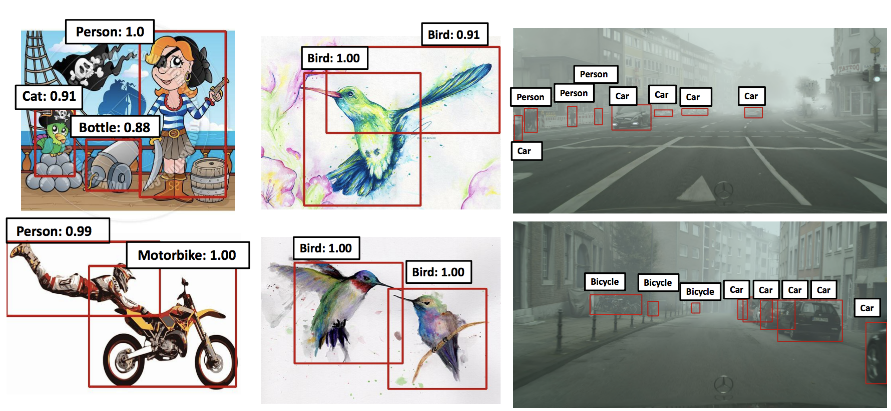
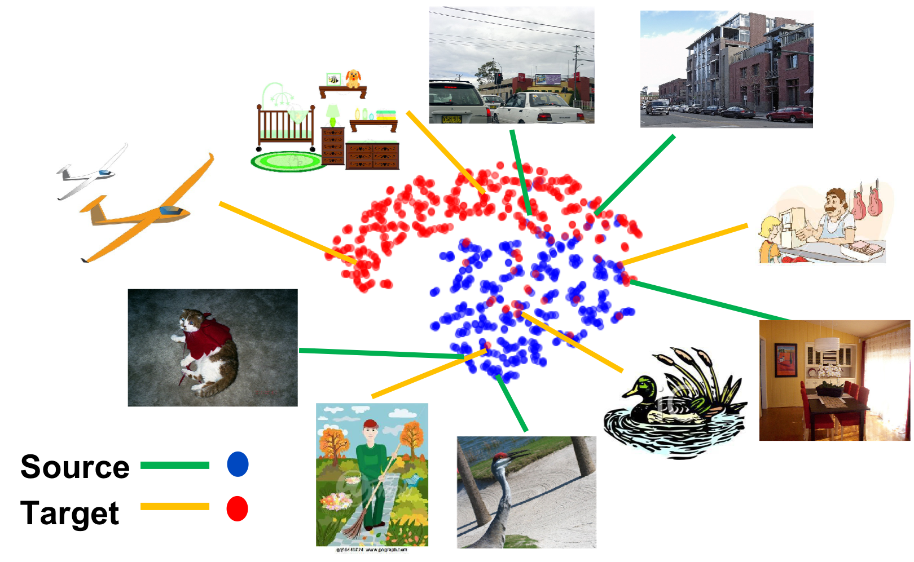
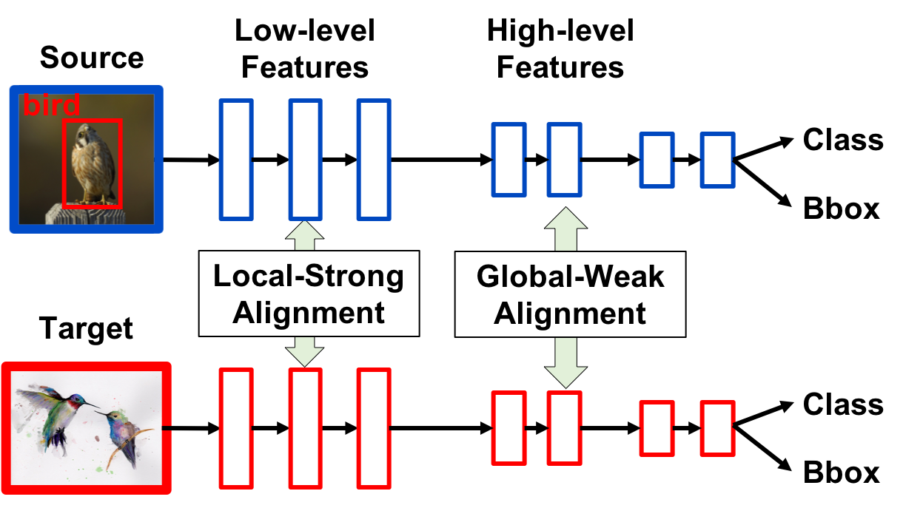
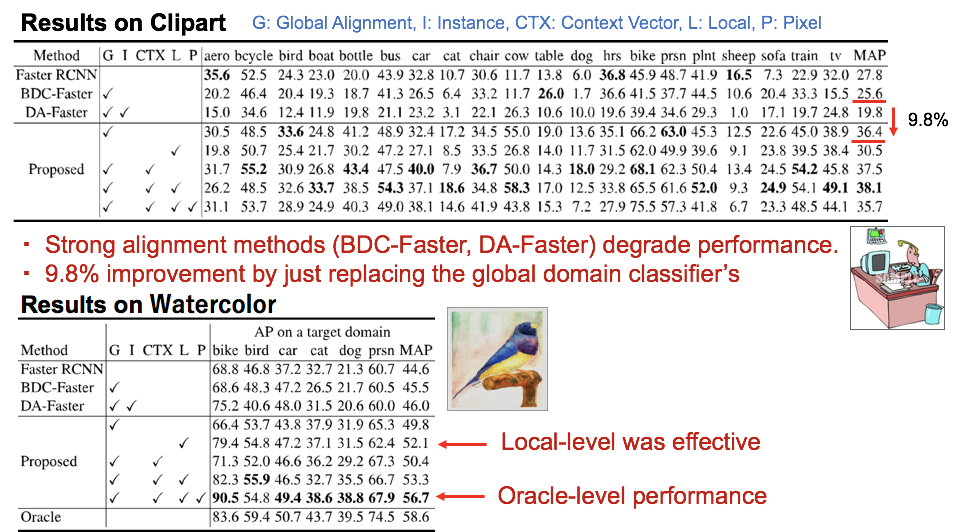
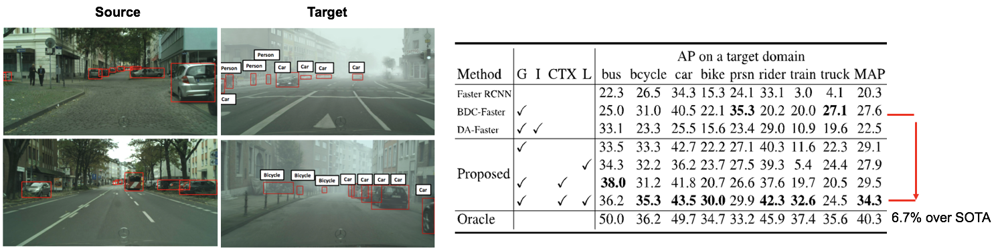
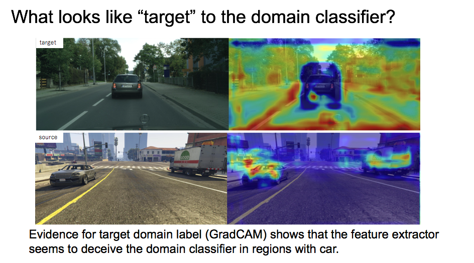

We propose an approach for unsupervised adaptation of object detectors from label-rich to label-poor domains which can significantly reduce annotation costs associated with detection. Recently, approaches that align distributions of source and target images using an adversarial loss have been proven effective for adapting object classifiers. However, for object detection, fully matching the entire distributions of source and target images to each other at the global image level may fail, as domains could have distinct scene layouts and different combinations of objects. On the other hand, strong matching of local features such as texture and color makes sense, as it does not change category level semantics. This motivates us to propose a novel approach for detector adaptation based on strong local alignment and weak global alignment. We empirically verify the effectiveness of our approach on several detection datasets comprising both large and small domain shifts.

Figure 1. Feature visualization by our proposed weak distribution alignment.

Figure 2. Overview of our proposed method.
Our method consists of "weak alignment" for global-image features in high level layer and "strong alignment" for local-image features in low-level layer in detetion network. The overview of the method is Figure 2. Weak alignment achieves partially align image features as shown in Figure 1.



@article{saito2018strong,
title={Strong-Weak Distribution Alignment for Adaptive Object Detection},
author={Saito, Kuniaki and Ushiku, Yoshitaka and Harada, Tatsuya and Saenko, Kate},
journal={CVPR2019},
year={2018}
}